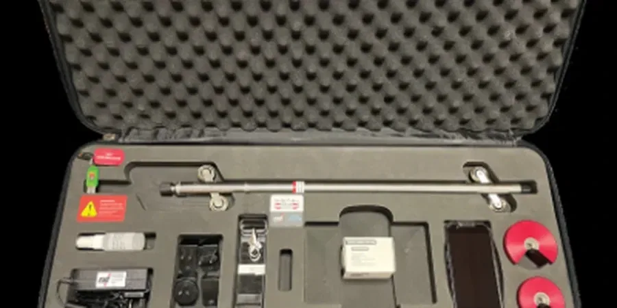

Les formations crayeuses du Crétacé supérieur affleurent largement sur les plateaux picards, mais à Amiens, la vallée de la Somme et ses affluents comme la Selle ont déposé des épaisseurs considérables de limons de plateau, d'alluvions tourbeuses et de colluvions de fond de vallée. Cette configuration géologique particulière, où la craie saine peut se trouver sous 5 à 10 mètres de matériaux compressibles, impose une étude de mécanique des sols rigoureuse avant toute implantation. Dans les quartiers bas comme Saint-Leu, les nappes perchées dans les remblais historiques compliquent souvent les terrassements, tandis que sur les hauteurs de Dury ou de Longueau, les limons de plateau présentent une sensibilité au retrait-gonflement qu'il faut quantifier. Nous mobilisons des moyens de reconnaissance adaptés, du pénétromètre dynamique léger pour les zones d'accès restreint aux sondages carottés dans la craie, et nous couplons systématiquement les essais in situ avec des analyses en laboratoire accrédité COFRAC selon la norme NF P 94-500 pour qualifier le comportement mécanique de chaque horizon identifié. Un essai CPT mené dans les alluvions de la Somme permet par exemple de détecter les lentilles tourbeuses non repérées en sondage classique, et d'affiner le modèle géotechnique avant dimensionnement.

Sous les limons de plateau d'Amiens, la craie altérée peut perdre 60 % de sa portance en présence d'eau — un facteur déterminant pour tout projet de fondation.
Méthodologie et portée
D'un secteur à l'autre d'Amiens, les problématiques de mécanique des sols changent radicalement. Dans le quartier Saint-Maurice, sur la rive droite, les limons de plateau sont souvent déconsolidés en surface et reposent sur une craie altérée dont la portance peut chuter brutalement en présence d'eau ; il n'est pas rare d'y mesurer des pressions limites nettes inférieures à 0,5 MPa dans l'horizon crayeux décomprimé. À l'opposé, dans la zone d'activités de la Vallée des Vignes, les formations alluviales récentes incluent des passées de tourbe de plus de 2 mètres d'épaisseur, avec des teneurs en matière organique dépassant 20 % — un matériau qu'aucun compactage ne stabilisera durablement. Cette hétérogénéité typique de la vallée de la Somme oblige à multiplier les points de reconnaissance et à croiser les méthodes d'investigation : essais pressiométriques dans les horizons porteurs, essais de pénétration dynamique pour le suivi continu des couches molles, et prélèvements intacts pour les essais triaxiaux consolidés non drainés lorsque le projet prévoit des remblais de grande hauteur. Les corrélations entre la résistance de pointe au pénétromètre et le module pressiométrique, établies sur des centaines de chantiers amiénois, nous permettent d'optimiser le nombre de sondages sans perdre en fiabilité.
Image technique de référence — Amiens
Considérations locales
Le climat océanique dégradé d'Amiens, avec des précipitations annuelles approchant les 700 mm et des hivers marqués par des remontées de nappe brutales, crée des conditions d'exposition sévères pour les sols de fondation. La craie, matériau emblématique de la Picardie, présente une particularité redoutable : sa gélivité. Les cycles gel-dégel dans les premiers 50 centimètres du massif crayeux fragmentent la matrice et réduisent la capacité portante de façon irréversible. Dans les projets de fondations superficielles, cette donnée oblige à ancrer systématiquement sous la profondeur de gel, fixée réglementairement à 0,80 m dans la Somme, mais que nous recommandons souvent de porter à 1,20 m dans les secteurs exposés nord. Autre point de vigilance : les circulations d'eau internes à la craie, qui suivent un réseau de diaclases et de conduits karstiques parfois millimétriques. Ces écoulements préférentiels, invisibles en surface, créent des gradients hydrauliques localisés qui lessivent les limons de couverture et provoquent des fonts — des effondrements localisés qui peuvent survenir plusieurs années après la construction. L'étude de mécanique des sols doit donc intégrer une analyse hydrogéologique saisonnière et une évaluation du potentiel karstique, en s'appuyant sur les cartes de l'Atlas des cavités souterraines de la Somme édité par le BRGM.
6 à 15 m en fond de vallée, 3 à 8 m sur les plateaux
Pression limite nette (craie saine)
1,2 à 2,8 MPa
Cohésion non drainée (limons)
15 à 45 kPa
Teneur en eau des tourbes
80 à 250 %
Classe GTR des limons de plateau
A1 à A2 selon sensibilité à l'eau
Risque retrait-gonflement argiles
Moyen (aléa modéré selon carte BRGM)
Niveau nappe en fond de vallée
0,5 à 2 m / TN en période hivernale
Services techniques associés
01
Reconnaissance géotechnique G2 AVP
Campagne de sondages pressiométriques et carottages dans les limons et la craie, essais de pénétration dynamique pour cartographier les épaisseurs de matériaux compressibles, et définition du modèle géologique préliminaire du site.
02
Étude de fondations G2 PRO
Dimensionnement des fondations superficielles ou profondes selon l'Eurocode 7, vérification des tassements absolus et différentiels dans les limons de plateau, et analyse du risque de dissolution de la craie sous contrainte.
03
Étude de terrassement et réemploi G2 PRO
Classification GTR des matériaux de déblai, essais Proctor et IPI pour évaluer la traficabilité des limons humides, et préconisations de traitement à la chaux ou au liant hydraulique pour les remblais en zone inondable.
04
Suivi géotechnique d'exécution G4
Contrôle de compactage par essai au nucléodensimètre ou densitomètre à membrane, suivi des niveaux de nappe pendant les terrassements en vallée de la Somme, et validation des ancrages en craie pour les murs de soutènement.
Normes applicables
NF P 94-500 (missions géotechniques selon la norme), NF EN 1997-2 (Eurocode 7 : reconnaissance des terrains), NF P 94-110 (essai pressiométrique Ménard), NF P 94-113 (essai de pénétration statique / CPT), NF P 94-050 (détermination de la teneur en eau pondérale), NF P 94-093 (essai Proctor normal et modifié)
Questions courantes
Quel est le prix d'une étude de mécanique des sols à Amiens pour une maison individuelle ?
Pour une maison individuelle à Amiens, une étude géotechnique de type G2 AVP suivie d'une G2 PRO se situe généralement entre 3 140 € et 4 130 €. Le coût précis dépend du nombre de sondages nécessaires, de la profondeur d'investigation (qui varie selon que l'on se trouve en fond de vallée tourbeux ou sur le plateau crayeux) et de la nature des essais en laboratoire requis. Un devis détaillé est systématiquement établi après analyse de la carte géologique du site et consultation des données du BRGM.
Comment la craie d'Amiens influence-t-elle le choix des fondations ?
La craie du Sénonien et du Turonien présente à Amiens a un comportement mécanique très contrasté : saine, elle offre une excellente portance avec des pressions limites dépassant 1,5 MPa, mais altérée ou gélive, elle peut se décomprimer et perdre plus de la moitié de sa capacité. L'étude de mécanique des sols doit impérativement identifier le toit de la craie saine et mesurer l'épaisseur de l'horizon altéré. Dans les secteurs où la craie est karstifiée, une reconnaissance complémentaire par microgravimétrie ou sondages destructifs rapprochés est prescrite pour écarter le risque de fonts.
Quels sont les délais pour réaliser une étude géotechnique complète à Amiens ?
Le délai standard pour une mission G2 complète à Amiens est de 4 à 6 semaines, incluant la phase de terrain (sondages, essais in situ), les analyses en laboratoire (identification GTR, essais mécaniques) et la rédaction du rapport avec notes de calcul. Les périodes hivernales peuvent allonger ce délai d'une à deux semaines en raison des conditions d'accès aux plateformes de sondage dans les limons détrempés. Nous informons systématiquement le client du planning prévisionnel dès la commande.
Emplacement et zone de service
Nous intervenons sur des projets à Amiens et dans sa zone métropolitaine.